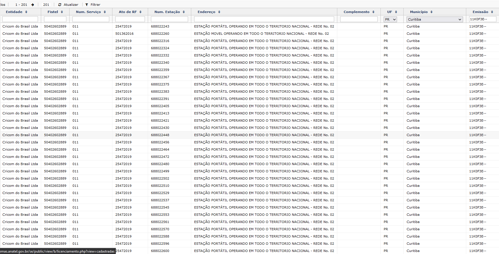
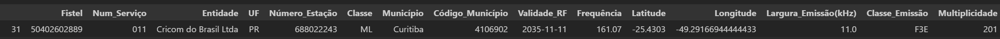

A presente biblioteca tem como intuito agregar dados de estações transmissoras de Radiofrequência
O fluxo é concentrado nos dados licenciados junto à ANATEL de serviços públicos de Radiodifusão e Serviços Privados de Telecomunicações, além de dados de emissores aeronáuticos consumidos de diversas APIs e fontes documentais institucionais.
Os diversos módulos presentes fazem a extração, limpeza, pós-processamento, validação, verificação de qualidade e agregação desses dados num formato consolidado para os planos de monitoração da ANATEL.
BASES DE DADOS
A Seguir são descritas as instâncias de banco, as bases de dados e as tabelas consultadas.
Instância de Banco de Dados SQL - Server - ANATELBDRO05:
Base de Dados: SITARWEB:
STEL - Serviços Privados de Telecomunicações
Base legada cujos registros, novos e antigos, estão sendo transferidos para o banco de dados licenciamento da instância ANATELBDRO06
Base de Dados: SRD:
RADCOM - Serviço de Radiodifusão Comunitária
Instância de Banco de Dados MongoDB - ANATELBDRO06:
Base de Dados: sms
Coleção: srd:
SRD - Demais serviços de Radiodifusão, e.g. TV, RTV, RTVD, FM, AM, etc.
Coleção: licenciamento:
TELECOM - Serviços Privados de Telecomunicações, e.g. Limitado Privado.
SMP - Serviço Móvel Pessoal, e.g. 4G e 5G
A base de dados sms, e no geral a instância como um todo, é referida como MOSAICO por conta da plataforma web no qual são servidos esses dados para acesso.
AERONAUTICA - Consolidação de diversas bases de dados públicas da aeronáutica. Esses dados são enriquecidos com informações adicionais fornecidas por órgãos como o DECEA, além de emissões conhecidas provenientes de conhecimento técnico prévio consolidado na agência.
RADCOM
Code
pasta = Path.cwd().parent /'dados'df = pd.read_parquet(pasta /'radcom.parquet.gzip')df.sample(5).iloc[:, :6]
Frequência
Entidade
Fistel
Número_Estação
Município
Código_Município
3168
104.9
ASSOCIACAO COMUNITARIA JOAIMENSE CULTURAL DE R...
50012640301
682812145
Joaíma
3136009
3345
104.9
ASSOCIACAO DE AMIGOS VALE DO GUAPORE
50013713175
683836722
Pontes e Lacerda
5106752
4433
105.9
ASSOCIACAO COMUNITARIA DE APOIO A CIDADANIA-ACAC
50013423096
683549529
Guarará
3128501
3169
104.9
ASSOCIAÇÃO COMUNITÁRIA EDUCATIVA DE JURAMENTO ...
50409156329
699282721
Juramento
3136801
457
87.9
ASSOCIAÇÃO COMUNITÁRIA E DE COMUNICAÇÃO SOCIAL...
50409272230
697612040
Salitre
2311959
Filtragem ✂️
Os únicos filtros efetuados na query para os dados de RADCOM são:
Esse filtro significa que a emissão está licenciada devidamente com o processo de outorga já concluído ou com funcionamento autorizado.
Code
print(f'A base RADCOM possui atualmente {len(df)} registros ativos.')
A base RADCOM possui atualmente 4996 registros ativos.
Descrição 📊
A seguir são descritas as colunas extraídas da base e o significado de cada uma
Frequência: Frequência de Transmissão da Estação
Entidade: Nome da Pessoa (Física | Jurídica) detentora da Outorga
Fistel: Código itentificador da Outorga de Serviço, um Fistel pode conter uma ou mais estações
Número_Estação: Código Identificador da Estação - Código não necessáriamente único, por vezes uma única estação possui diversos transmissores com características distintas
Município: Município de Outorga daquela estação
Código_Município: Código único do IBGE identificando univocamente o município, esse código é utilizado para validar a localização das coordenadas da estação
UF: Unidade Federativa ( Estado )
Latitude: Latitude em formato Decimal
Longitude: Longitude em formato Decimal
Fase: Fase do Processo de Licenciamento
Situação: Situação da Outorga
Pós-Processamento 🛠️
A seguir são descritas as colunas adicionadas à base extraída e o significado de cada uma
As colunas Fase e Situação somente existem na base RADCOM, para normalizar esses dados e combinar com as demais bases, essas duas colunas são transformadas em uma única coluna chamada Classe, essa coluna tem o intuito em todas as tabelas de identificar o tipo de estação transmissora:
Onde a informação de Situação é ausente, a Classe é igual a Fase, exemplos:
3
P
Onde ambas estão presentes a Classe é igual a <Fase>-<Situação>:
3-P
P-A
Num_Serviço: Número identificador do serviço, no caso de RADCOM o valor é único: 231
Classe_Emissão: Dado ausente na base de RADCOM , inserido valores únicos nulos para normalizar com as demais bases
Largura_Emissão(kHz): Largura de Banda da Emissão em kHz. Nessa coluna é imputado o valor de 256, valor padrão para o serviço FM.
Validade_RF: Dado ausente na base de RADCOM , inserido valores únicos nulos para normalizar com as demais bases
Status: Dado ausente na base de RADCOM , inserido valor único RADCOM para normalizar com demais bases
Fonte: Fonte dos dados, nessa caso é inserido o nome da Tabela: SRD
Multiplicidade: Contagem do Registro. Nesse caso o valor é somente 1 por conta de todos os registros serem únicos, i.e. são referentes a uma estação única
Dados Incorretos 🗑️
A seguir são exibidas informações sobre coordenadas ausentes ou facilmente identificadas como incorretas, nesse caso fora dos limites do Brasil. > Uma validação precisa das coordenadas é feita antes de consolidar o arquivo final e será descrita posteriormente
Code
print(f'Número de coordenadas ausentes: {df[df.Latitude.isna() | df.Longitude.isna()].shape[0]}')
Número de coordenadas ausentes: 0
Code
df[['Latitude', 'Longitude']] = df[['Latitude', 'Longitude']].astype('float')bad = df[~(df.Latitude.between(MIN_LAT, MAX_LAT) & df.Longitude.between(MIN_LONG, MAX_LONG))]print("Exemplo de coordenadas incorretas, fora dos limites do Brasil: ")bad.loc[:, ['Frequência', 'Entidade', 'Número_Estação', 'Município', 'Latitude', 'Longitude']]
Exemplo de coordenadas incorretas, fora dos limites do Brasil:
A base do STEL de estações outorgadas ativas originalmente era muito grande, comportando milhões de registros, gradualmente os registros ativos e novos registros foram migrados para a base licenciamento do MOSAICO
A seguir são descritos os filtros realizados na query do STEL:
Excluir estações do Serviço Móvel Pessoal (SMP - 010)
Incluir somente estações com Data de Exclusão nula, i.e. estações ativas
Incluir somente estações com estado L (LICENCIADO)
Excluir estações com o código do município ausente (Necessário para validar a localização)
Excluir estações sem a frequência de transmissão atribuída
Excluir estações cuja frequência atribuída esteja distinta do estado L ( LICENCIADO )
Excluir estações cuja Validade de Radiofrequência esteja nula
Code
print(f'A base STEL possui atualmente {len(df)} registros ativos pelos filtros descritos.')
A base STEL possui atualmente 35417 registros ativos pelos filtros descritos.
Descrição 📊
Abaixo são descritas as colunas que não foram descritas anteriormente na base de RADCOM
Classe: String que identifica o tipo de estação , e.g Fixa Aeronáutica, Fixa Base, Móvel, Transmissora etc…
Num_Serviço: Código que identifica o Serviço Outorgado na Anatel, aqui existem diversos serviços: 604, 035, 507, 019
Validade_RF: Data de Validade da Radiofrequência
As demais colunas foram descritas anteriormente para a base RADCOM
Pós-Processamento 🛠️
Nas tabelas do banco de dados do STEL, na modelagem de banco as informações de Classe_Emissão e Largura_Emissão foram codificadas numa única string chamada Designação de Emissão, é efetuado o processamento dessa string para resgatar as informações individuais em 2 colunas:
Classe_Emissão: Código que identifica as característica da emissão daquela estação
Largura_Emissão(kHz): Largura de Emissão em kHz
A coluna Validade_RF é filtrada para constar somente a data, ela aparece no formato datetime nas tabelas do banco, no entanto com informação de hora nula
A Frequência é normalizada para a unidade MHz
Status: Essa coluna é criada para normalizar as colunas das bases do MOSAICO. É inserido um valor único L
Fonte: Fonte dos dados, nessa caso é inserido o nome do Banco STEL
Multiplicidade: Contagem do Registro. Nesse caso o valor é somente 1 por conta de todos os registros serem únicos, i.e. são referentes a uma estação única
Dados Incorretos 🗑️
A seguir são exibidas informações sobre coordenadas ausentes ou facilmente identificadas como incorretas, nesse caso fora dos limites do Brasil.
Uma validação precisa das coordenadas é feita antes de consolidar o arquivo final e será descrita posteriormente
Code
print(f'Número de coordenadas ausentes: {df[df.Latitude.isna() | df.Longitude.isna()].shape[0]}')
Número de coordenadas ausentes: 0
Code
df[['Latitude', 'Longitude']] = df[['Latitude', 'Longitude']].astype('float')bad = df[~(df.Latitude.between(MIN_LAT, MAX_LAT) & df.Longitude.between(MIN_LONG, MAX_LONG))]print("Exemplo de coordenadas incorretas, fora dos limites do Brasil: ")bad.loc[:, ['Frequência', 'Entidade', 'Número_Estação', 'Município', 'Latitude', 'Longitude']]
Exemplo de coordenadas incorretas, fora dos limites do Brasil:
Excluir frequências nulas ou zeradas, e excluir registros não numéricos ("$type": 1.0 )
Excluir registros com código de município ausente ou inválido ( Necessário para validar as coordenadas)
Excluir registros com número do Fistel Nulo ou Inválido
Descrição 📊
🤌 Não existem informações no MOSAICO de Classe_Emissão e tampouco Largura_de_Emissão para o serviço de Radiodifusão, assim essas colunas são preenchidas com valores nulos
Adicionalmente são extraídas as seguintes colunas com informações técnicas das estações:
Potência(W)
Cod_TipoAntena
Polarização
Raio_Antena
Ganho_Antena
Frente_Costa_Antena
Angulo_Meia_Potencia_Antena
Ângulo_Elevação
Azimute
Altura_Antena
Perdas_Acessorias
Pós-Processamento 🛠️
São mantidas somente estações nos estados autorizados a operar: C1, C2, C3, C4, C7, C98
Normalizada as frequências para a unidade MHz
Imputados os valores para Largura_de_Emissão(kHz), e.g. 256kHz para o canal estéreo de FM, 6MHz para TV Digital etc.
Apesar de não constar esses dados na base, os valores de referência são conhecidos pela natureza do Serviço.
Code
print(f'A base do MOSAICO de Radiodifusão possui atualmente {len(df)} registros ativos pelos filtros descritos.')
A base do MOSAICO de Radiodifusão possui atualmente 31012 registros ativos pelos filtros descritos.
Dados Incorretos 🗑️
☝🏽 Os dados do MOSAICO de Radiodifusão são bastante incompletos em relação às coordenadas, praticamente metade dos registros após a filtragem e pós-processamento não possuem latitude e/ou longitude. No entanto esses dados não são excluídos deliberadamente porque nesses registros serão imputados as coordenadas centrais do município no qual se encontram na etapa de validação de coordenadas.
Registros cuja data de exclusão é Nula, i.e. registros ativos
Data de Validade de Radiofrequência não nula ou vazia
Estado Licenciado
Excluir serviços que não são de Radiodfusão ou não são relevantes pelos Planos de Monitoração atualmente, por exemplo 010 - SMP é extraído separadamente.
Frequência de Transmissão não nula, zerada ou vazia
Código de Município não nulo ou vazio
Frequência de Transmissão no formato numérico (eliminar registros com caracteres e texto)
Latitude no formato numérico
Longitude no formato numérico
Descrição 📊
A base do MOSAICO - licenciamento, da qual as tabelas de Telecomunicações e Serviço Móvel Pessoal são extraídas, é de longe a maior atualmente com milhões de registros ativos. As colunas extraídas para os serviços de telecomunicações são as mesmas descritas anteriormente no MOSAICO - Radiodifusão.
Pós-Processamento 🛠️
O pós-processamento do MOSAICO - LICENCIAMENTO é mais complexo por conta das escolhas na modelagem do Banco e faz uso extenso de funções da biblioteca pandas
A string DesignacaoEmissão é a concatenação das colunas Largura_Emissão e Classe_Emissão como constavam no STEL. Além do mais existem estações com múltiplas strings de Emissão na mesma coluna separadas por vírgula, os passos de processamento dessa colunas são os seguintes:
Eliminação de espaços e normalização para maiúscula
Expansão dos múltiplos registros separados por vírgula em linhas individuais, 1 por linha com as demais informações idênticas
Processamento de cada string Emissão concatenada nas duas partes atômicas: Largura_Emissão e Classe_Emissão
Multiplicidade: Contador do número de estações similares:
Existem registros com todas as características anteriores idênticas, exceto o Número_Estação por exemplo.
Estações possuem detalhes técnicos que não são considerados relevantes, pelo menos no escopo atual, para a Análise Espectral e Identificação de Emissões - como por exemplo:
Tipo de Antena
Polarização: Horizontal ou Vertical.
Altura da Antena
Potência de Transmissão
A seguir é mostrado um exemplo de estação desse tipo, com 201 estações com características técnicas idênticas conforme o quesito descrito no parágrafo anterior: 
Esses registros são considerados idênticos e são agrupados. É utilizado o primeiro número de estação que aparece na base como referência e o total de estações “idênticas” é registrado na coluna multiplicidade: 1 para estações “únicas” e qualquer valor maior que 1 descreve o número de estações similares agrupadas, como as 201 no exemplo anterior 
Atualmente esse agrupamento de estações similares em um único registro reduz o número de registro para certa de 10% do original, em outras palavras, no pós-processamento são agregadas cerca de 90% das estações.
Code
print(f'A base do MOSAICO de Telecomunicações possui atualmente {len(df)} registros ativos pelos filtros descritos.')
A base do MOSAICO de Telecomunicações possui atualmente 757142 registros ativos pelos filtros descritos.
MOSAICO - Serviço Móvel Pessoal
Como o serviço de telefonia e banda larga móvel é um serviço de extrema importância e aspecto distinto, com diferentes necessidades de pós-processamento. Esse serviço é extraído num fluxo específico.
A query para o serviço SMP, assim como o restante das bases do MOSAICO é a mais simples possível, uma vez que filtros e pós-processamento mais sofisticados são feitos diretamente no python utilizando o todo poderoso pandas 🐼
Registros cuja data de exclusão é Nula, i.e. registros ativos
Estado Licenciado
Extração de estações do serviço SMP - 010
Frequência de Transmissão não nula, zerada ou vazia
Código de Município não nulo ou vazio
Frequência de Transmissão no formato numérico (eliminar registros com caracteres e texto)
Descrição 📊
As colunas extraídas são as mesmas já descritas anteriormente para as bases de Radiodifusão e Licenciamento.
Pós-Processamento 🛠️
O pós-processamento do MOSAICO - Serviço Móvel Pessoal envolve mais passos além do que já foi descrito para o MOSAICO - Licenciamento. As informações cadastradas são de responsabilidade das entidades, e portanto não há garantia de corretude das informações prestadas. Diversos problemas são encontrados, como dados ausentes e incorretos.
A string DesignacaoEmissão é processada da mesma forma descrita no parágrafo anterior para a base MOSAICO - Licenciamento, dela é derivada a coluna Classe_Emissão e Largura_Emissão(kHz)
Os registros que possuem a Frequência_Transmissão inválida mas não nula ( lembre-se que esses casos já são filtrados pela query efetuada direto no MongoDB), tem essa coluna substituída pela Frequência_Central caso esta seja válida. Isso é feito para que um registro somente seja descartado quando não for possível fazer nenhum processamento para contornar.
Largura_Emissão(kHz): Valores nulos são preenchidos com o valor 0
Classe_Emissão: Valores nulos são preenchidos com a string: NI ( Não Informado )
Construção da Informação do Canal > Apesar da informação do canal estar cadastrada nas colunas Frequência Inicial, Frequência Final, muitos registros estão ausentes ou simplesmente incorretos. Portanto essas informações são descartadas e o canal é derivado à partir da Frequência_Transmissão e Largura_Emissão(kHz).
O Início e Fim do Canal são construídos da seguinte forma:
Multiplicidade ( Contagem de Estações com as mesmas características ) > Os responsáveis técnicos pela supervisão dos Planos de Monitoração da Anatel definiram as seguintes colunas como índices para agrupar estações: ['UF', 'Código_Município', 'Fistel', 'Frequência_Transmissão', 'Largura_Emissão(kHz)', 'Classe_Emissão'] Em outras palavras, as estações que possuem essas características iguais, são essencialmente idênticas para os fins específicos de detecção no âmbito dos planos de monitoração.
Qualquer registro com algum desses dados ainda nulos é excluído - não é possível agrupar registro que possua alguma coluna com valor nulo
O seguir os registros são agrupados segundo as colunas supracitadas e a contagem de cada grupo único é registrada na coluna Multiplicidade
Para cada registro da base já agregada a canalização é validada da seguinte forma:
O canal é cruzado com o arquivo de canalização e checado se o canal está contido num bloco único ou num conjunto de blocos adjacentes dentro de uma das faixas autorizadas. As seguintes informações adicionais são incluídas:
Canalização: Válido | Inválido
Faixa: Faixa na qual o canal pertence
Blocos: Bloco ou Blocos adjacentes que contém o canal
Offset: Anotado o OffsetDownlink <-> Uplink do bloco ou blocos do Canal
O registro nesse caso é referente ao Downlink, esse valor de Offset será usado para definirmos a frequência de Uplink
Derivação da Frequência de *Uplink*
Verificação da consistência dos blocos de Downlink
Para cada canal validado pelo, se estiver contido em mais de um bloco, os blocos devem ser adjacentes e possuir somente 1 valor de Offset
Filtrados registros com canalização Inválido
Filtrados registros com Offset=0 e|ou Largura_Emissão=0
Nesse caso a Frequência de Uplink é igual à Frequência de Downlink e o registro vale para ambos os casos
Criada Frequência de Uplink: Frequência_Uplink = Frequência_Downlink - Offset
Concatenado na base os registros derivados de Uplink
Nesse caso são os mesmos dados dos registros válidos de Downlink mas com a frequência ( orinalmente de Downlink ) substituída pela frequência derivada de Uplink
Substituição de Coordenadas para os registros agrupados
Para os registros que possuem Multiplicidade=1, não houve agregação e a estação é única. Para esses a coordenada da estação é mantida.
Para todos os demais registros as coordenadas são substituídas pela coordenada do município, à partir do Código_Município presente no registro.
Outro tipo de processamento, como imputar uma média das coordenadas por exemplo, não agrega valor “fiscalizatório” porque gera uma coordenada que não existe. A substituição pela coordenada central do município tem o propósito simplesmente de dar a localidade na qual aquele conjunto de estações pertence.
Formatação Final
Concatenada a informação sobre a Tecnologia na coluna Classe_Emissão
Status: Inserido nessa coluna um valor único L para indicar que é licenciada
Fonte: MOS ( MOSAICO ) para o Downlink e DOC para o Uplink
Esse valor DOC vem de Documentação, termo usado genericamente aqui para indicar todos os registros “criados” e não presentes numa base específica, como é o caso aqui dos valores de Uplink
Classe: Inserido os valores FB (Fixa Base) e ML (Móvel) para os registros de Downlink e Uplink respectivamente
Code
print(f'A base do MOSAICO - SMP possui atualmente {len(df)} registros extraídos ativos')print(f'e {len(df2)} registros resultados processados pelos critérios descritos.')
A base do MOSAICO - SMP possui atualmente 1977611 registros extraídos ativos
e 293613 registros resultados processados pelos critérios descritos.
AERONÁUTICA 🛬
Além de prover uma API que extrai, limpa, processa e padroniza os dados de estações licenciadas na Anatel - relevantes para a Identificação de Emissões no âmbito dos Planos de Monitoração - Outro diferencial são os dados adicionais de emissões aeronáuticas extraídos e consolidados provenientes de diversas fontes, em sua maioria sem registro “oficial” na Anatel.
As fontes de dados aeronáuticos são:
ICAO - Através do Software Frequency Finder são filtradas e exportadas as emissões do Brasil
Dados adicionais de Radares Secundários nas frequências 1030MHz e 1090MHz com frequência e localização conhecida, disponível por documentação interna.
Arquivo de Canalização
Este arquivo, também criado por meio de documentação interna, mapeia os canais das frequências do tipo VOR_ILSLoc, nas frequências adicionais ILS glide, DME Airborne e DME Ground.
image.png
Os registros presentes nas bases da aeronáutica, normalmente só contém registros das frequências VOR_ILSLoc, no entanto para os canais listados as demais frequências estão presentes e como parte do pós-processamento essas frequências são imputadas mantendo a mesma descrição e localização.
Pós-Processamento
Não cabe descrever aqui como é implementado o código para consumir as APIs, alguns são um tanto complexos como o AISWEB, para tal basta consultar a documentação ou investigar diretamente os módulos python no entanto o processamento resultante é simples de descrever:
Mapeamento das frequências VOR_ILSLoc no arquivo de canais. As frequências adicionais presentes nos canais são adicionadas no arquivo final.
Como existe sobreposição de registros, i.e. as bases não são individualizadas, os registros são mapeados entre si e caso estejam a uma distância menor que uma distância de referência ( normalmente uma margem bem ampla de 10Km ou 20Km) os registros são mesclados, mantendo-se a coordenada do registro original do icao e a descrição de ambos é concatenada.
Code
df = pd.read_parquet(pasta /'aero.parquet.gzip')for c in ['Latitude', 'Longitude']: df[c] = df[c].astype('float')df.sample(5).iloc[:, :6]
Frequency
Latitude
Longitude
Description
2874
2800.0
-22.464277
-43.297478
[RMET] Radar - Pico do Couto/RJ
589
1164.0
-9.516666
-35.783333
[DOC] VOR/DME, MACEIO (Ground-based DME)
533
115.8
-21.984562
-47.344501
[AISG] VOR - PIRASSUNUNGA CH 105X
2375
131.6
-19.373888
-43.582779
[ICAO] AOC U 100/100, CONFINS
842
119.65
-19.373888
-43.582779
[ICAO] APP-U C-150/450, CONFINS
Validação de Coordenadas ✅
Code
df = pd.read_parquet(pasta /'base.parquet.gzip')for c in ['Latitude', 'Longitude']: df[c] = df[c].astype('float')df.sample(5).iloc[:, :6]
Frequência
Entidade
Fistel
Número_Estação
Município
Código_Município
176758
166.45625
CONCESSIONARIA BR-040 S.A.
50411716298
1000516528
3146107
788342
458.025
EMPRESA BRASILEIRA DE INFRA-ESTRUTURA AEROPORT...
11030016470
684830337
1100205
92400
157.45625
AMAZONAS DISTRIBUIDORA DE ENERGIA S/A
50403650801
1002539185
1302603
477613
407.1
Oi S.a. - em Recuperacao Judicial
04030120318
327632062
<NA>
3127354
739091
149.33
PREFEITURA DO MUNICIPIO DE VALINHOS
50012992097
683172255
3556206
Vimos superficialmente nos parágrafos anteriores que além haver muitos registros sem coordenadas - como no MOSAICO - SRD - muitas coordenadas não são válidas, seja por inversão de sinal, lugar incorreto do divisor decimal, inversão da Latitude com a Longitude ou simplesmente não correspondem ao município no qual estão licenciadas.
Os passos para validar as informações de localização são:
Os arquivos descritos anteriormente são concatenados, exceto os dados da aeronáutica por não conter o Código_Município
Os registros com Código_Município ausentes são excluídos - este dado é necessário para validar se a coordenadas estão contidas corretamente no município.
As dados de localização - a saber Código_Município, Latitude, Longitude - são repassados para uma query SQL que busca na base CORPORATIVO.dbo.TB_IBGE_MUNICIPIO e checa se as coordenadas estão contidas no polígono característico descrito pelo Código_Município, retornando Verdadeiro caso positivo e Falso caso contrário:
Além disso é retornado o nome padronizado do Município e suas coordenadas como registrado oficialmente no IBGE
Arquivo Final🗄️
O Arquivo final disponibilizado para as atividades de monitoração é formatado da seguinte forma:
Arquivo base com os dados da Anatel com as seguintes colunas:
Frequência
Número_Serviço
Número_Estação
Classe_Emissão
Largura_Emissão(kHz)
Para simplificação de como os dados são apresentados, é criada a coluna Descrição com as seguintes colunas aglutinadas:
Fonte - Qual das bases acima é originário o registro
Status
Classe
Entidade
Fistel
#Estação - Número_Estação+ Multiplicidade
Município_IBGE
UF
A coluna Município é substituída pela coluna Município_IBGE, por esta estar completa e validada através do Código_Município
Os registros que não possuem coordenadas ou estas foram considerados inválidas têm suas coordenadas substituídas pela coordenada do município.
Para esses registros, é inserido o sinal * ao final da Descrição.
Arquivo pós-processado com os dados aeronáuticos
Mesclagem dos dados aeronáuticos com os registros da Anatel, nos mesmos moldes que os dados aeronáuticos foram mesclados entre si. Nesse caso os dados da Anatel são mantidos e a Descrição da estação aeronáutica concatenada com a Descrição da estação da Anatel.
Adição de uma coluna numérica identificadora da emissão: #1, #2, #3, ...
Code
df = pd.read_parquet(pasta /'AnatelDB.parquet.gzip')for c in ['Latitude', 'Longitude']: df[c] = df[c].astype('float')df.sample(5)